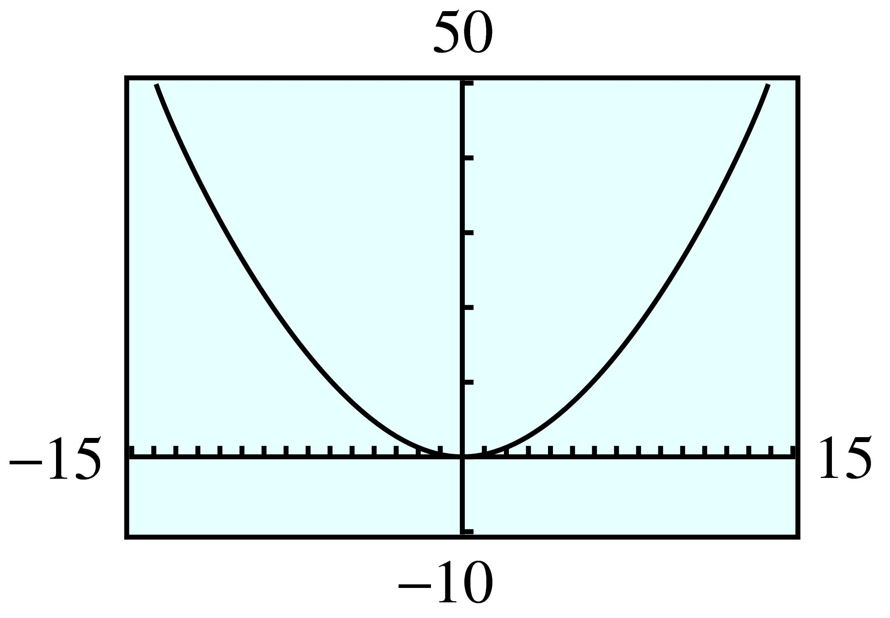
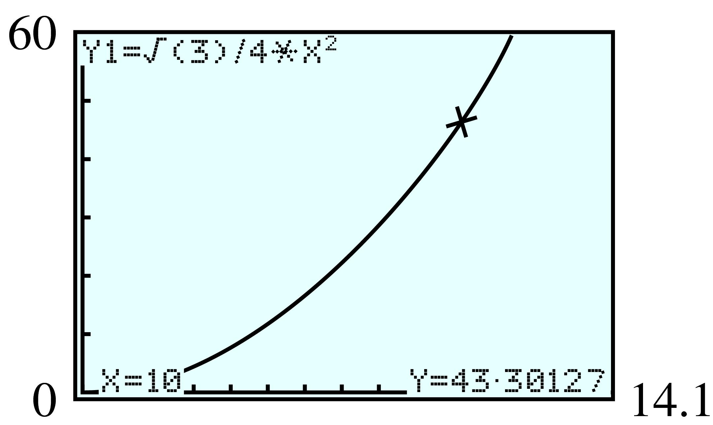

Section 2.1 Nonlinear Models
¶In Chapter 1, we considered models described by linear functions. In this chapter, we begin our study of nonlinear models.
Subsection 2.1.1 Solving Nonlinear Equations
When studying nonlinear models, we will need to solve nonlinear equations. For example, in Investigation 2 we used a graph to solve the quadratic equation
Here is another example. The figure shows a table and a graph for the function \(y = 2x^2 - 5\text{.}\)

| \(x\) | \(-3\) | \(-2\) | \(-1\) | \(0\) | \(1\) | \(2\) | \(3\) |
| \(y\) | \(13\) | \(3\) | \(-3\) | \(-5\) | \(-3\) | \(3\) | \(13\) |
You can see that there are two points on the graph for each \(y\)-value greater than \(-5\text{.}\) For example, the two points with \(y\)-coordinate \(7\) are shown. To solve the equation
we need only find the \(x\)-coordinates of these points. From the graph, the solutions appear to be about \(2.5\) and \(-2.5\text{.}\)
How can we solve this equation algebraically? The opposite operation for squaring a number is taking a square root. So we can undo the operation of squaring by extracting square roots. We first solve for \(x^2\) to get
and then take square roots to find
Caution 2.1.1.
Don't forget that every positive number has two square roots. The symbol \(\blert{\pm}\) (read “plus or minus”) is a shorthand notation used to indicate both square roots of \(6\text{.}\)
The exact solutions are thus \(\sqrt{6}\) and \(-\sqrt{6}\text{.}\) We can also find decimal approximations for the solutions using a calculator. Rounded to two decimal places, the approximate solutions are \(2.45\) and \(-2.45\text{.}\)
In general, we can solve equations of the form \(ax^2 + c = 0\) by isolating \(x^2\) on one side of the equation and then taking the square root of each side. This method for solving equations is called extraction of roots.
Extraction of Roots.
To solve the equation
- Isolate \(x^2\text{.}\)
- Take square roots of both sides. There are two solutions.
Example 2.1.2.
If a cat falls off a tree branch 20 feet above the ground, its height \(t\) seconds later is given by \(h = 20 - 16t^2\text{.}\)
- What is the height of the cat \(0.5\) second later?
- How long does the cat have to get in position to land on its feet before it reaches the ground?
-
In this question, we are given a value of \(t\) and asked to find the corresponding value of \(h\text{.}\) To do this, we evaluate the formula for \(t = 0.5\text{.}\) We substitute \(\alert{0.5}\) for \(t\) into the formula and simplify.
\begin{equation*} \begin{aligned}[t] h \amp= 20 - 16(\alert{0.5})^2 \amp\amp \blert{\text{Compute the power.}}\\ \amp = 20 - 16 (0.25) \amp\amp \blert{\text{Multiply; then subtract.}}\\ \amp = 20 - 4 = 16 \end{aligned} \end{equation*}The cat is \(16\) feet above the ground after \(0.5\) second.
-
We would like to find the value of \(t\) when the height, \(h\text{,}\) is known. We substitute \(h = \alert{0}\) into the equation to obtain
\begin{equation*} \alert{0} = 20 - 16t^2 \end{equation*}To solve this equation, we use extraction of roots. First we isolate \(t^2\) on one side of the equation.
\begin{equation*} \begin{aligned}[t] 16t^2 \amp= 20 \amp\amp \blert{\text{Divide by 16.}}\\ t^2 \amp= \frac{20}{16}=1.25 \end{aligned} \end{equation*}Then we take the square root of both sides of the equation to find
\begin{equation*} t = \pm \sqrt{1.25} \approx \pm1.118 \end{equation*}

Only the positive solution makes sense here, so the cat has approximately 1.12 seconds to get into position for landing.
A graph of the cat's height after \(t\) seconds is shown at left. The points corresponding to parts (a) and (b) are labeled.
Note 2.1.3.
In part (a) of Example 2.1.2 we evaluated the expression \(20 - 16t^2\) to find a value for \(h\text{,}\) and in part (b) we solved the equation \(0 = 20 - 16t^2\) to find a value for \(t\text{.}\)
Checkpoint 2.1.4.
-
Solve by extracting roots \(\dfrac{3x^2 - 8}{5}= 10.\)
\(\blert{\text{First, isolate } x^2.}\)
\(\blert{\text{Take the square root of both sides.}}\)
Give exact answers; then give approximations rounded to two decimal places.
\(x=\pm\sqrt{\dfrac{58}{3}}\approx \pm 4.40 \)
Subsection 2.1.2 Solving Formulas
We can use extraction of roots to solve many formulas involving the square of the variable.
Example 2.1.5.
The formula \(V = \dfrac{1}{3} \pi r^2h\) gives the volume of a cone in terms of its height and radius. Solve the formula for \(r\) in terms of \(V\) and \(h\text{.}\)
Because the variable we want is squared, we use extraction of roots. First, we multiply both sides by \(3\) to clear the fraction.
Because the radius of a cone must be a positive number, we use only the positive square root: \(r = \sqrt{\dfrac{3V}{\pi h}}\text{.}\)
Checkpoint 2.1.6.
Subsection 2.1.3 More Extraction of Roots
Equations of the form
can also be solved by extraction of roots after isolating the squared expression, \((px + q)^2\text{.}\)
Example 2.1.7.
Solve the equation \(~3(x - 2)^2 = 48\)
First, we isolate the perfect square, \((x - 2)^2\text{.}\)
This gives us two equations for \(x\text{,}\)
The solutions are \(6\) and \(-2\text{.}\)
Here is a general strategy for solving equations by extraction of roots.
Extraction of Roots.
To solve the equation
- Isolate the squared expression, \((px + q)^2\text{.}\)
- Take the square root of each side of the equation. Remember that a positive number has two square roots.
- Solve each equation. There are two solutions.
Checkpoint 2.1.8.
Solve \(~~2(5x + 3)^2 = 38~~\) by extracting roots.
- Give your answers as exact values.
- Find approximations for the solutions to two decimal places.
\(x=\dfrac{-3\pm \sqrt{19}}{5} \)
\(x\approx -1.47\) or \(x\approx 0.27\)
Subsection 2.1.4 Compound Interest and Inflation
Many savings institutions offer accounts on which the interest is compounded annually. At the end of each year, the interest earned is added to the principal, and the interest for the next year is computed on this larger sum of money.
Compound Interest.
If interest is compounded annually for \(n\) years, the amount, \(A\text{,}\) of money in an account is given by
where \(P\) is the principal and \(r\) is the interest rate, expressed as a decimal fraction.
Example 2.1.9.
Carmella invests $3000 in an account that pays an interest rate, \(r\text{,}\) compounded annually.
- Write an expression for the amount of money in Carmella’s account after two years.
- What interest rate would be necessary for Carmella's account to grow to $3500 in two years?
- We use the formula above with \(P = 3000\) and \(n = 2\text{.}\) Carmella’s account balance will be\begin{equation*} A = 3000(1 + r)^2 \end{equation*}
- We substitute \(3500\) for \(A\) in the equation.\begin{equation*} \alert{3500} = 3000(1 + r)^2 \end{equation*}We can solve this equation in \(r\) by extraction of roots. First, we isolate the perfect square.\begin{equation*} \begin{aligned}[t] 3500 \amp = 3000(1 + r )^2 \amp\amp \blert{\text{Divide both sides by 3000.}} \\ 1.1\overline{6} \amp = (1 + r )^2 \amp\amp \blert{\text{Take the square root of both sides.}} \\ \pm 1.0801 \amp\approx 1 + r \amp\amp \blert{\text{Subtract 1 from both sides.}}\\ r \amp\approx 0.0801 \text{ or } r \approx -2.0801 \end{aligned} \end{equation*}Because the interest rate must be a positive number, we discard the negative solution. Carmella needs an account with interest rate \(r \approx 0.0801\text{,}\) or just over 8%, to achieve an account balance of $3500 in two years.
The formula for compound interest also applies to the effects of inflation. For instance, if there is a steady inflation rate of 4% per year, in two years an item that now costs $100 will cost
Checkpoint 2.1.10.
Two years ago, the average cost of dinner and a movie was $24. This year the average cost is $25.44. What was the rate of inflation over the past two years?
\(r\approx 2.96\%\)
Subsection 2.1.5 Other Nonlinear Equations
Because squaring and taking square roots are opposite operations, we can solve the equation
by squaring both sides to get
Similarly, we can solve
by taking the cube root of both sides, because cubing and taking cube roots are opposite operations. Rounding to three places, we find
The notion of undoing operations can help us solve a variety of simple nonlinear equations. The operation of taking a reciprocal is its own opposite, so we solve the equation
by taking the reciprocal of both sides to get
Example 2.1.11.
Solve \(~~\dfrac{3}{x - 2}= 4\)
We begin by taking the reciprocal of both sides of the equation to get
We continue to undo the operations in reverse order. First, we multiply both sides by \(3\text{.}\)
The solution is \(\dfrac{11}{4}\text{,}\) or \(2.75\text{.}\)
Checkpoint 2.1.12.
Solve \(~~2\sqrt{x + 4} = 6\)
\(x=5\)
Checkpoint 2.1.13.
Use the intersect feature to solve the equation \(2x^2 - 5 = 7\text{.}\) Round your answers to three decimal places.
\(x=\pm 2.449\)
Subsection 2.1.6 Section Summary
¶Subsubsection 2.1.6.1 Vocabulary
Look up the definitions of new terms in the Glossary.
Quadratic
Compound interest
Exact solution
Perfect square
Extraction of roots
Inflation
Area
Cube root
Isolate
Height
Perimeter
Reciprocal
Subsubsection 2.1.6.2 CONCEPTS
Extraction of Roots.
To solve the equation
\begin{equation*} a(px+q)^2 +r=0 \end{equation*}Isolate the squared expression, \((px + q)^2\text{.}\)
Take the square root of each side of the equation. Remember that a positive number has two square roots.
Solve each equation. There are two solutions.
Compound Interest.
If interest is compounded annually for \(n\) years, the amount, \(A\text{,}\) of money in an account is given by
\begin{equation*} A = P(1 + r)^n \end{equation*}where \(P\) is the principal and \(r\) is the interest rate, expressed as a decimal fraction.
We can give exact answers to a simple nonlinear equation, or we can give decimal approximations.
Simple nonlinear equations can be solved by undoing the operations on the variable.
Subsubsection 2.1.6.3 STUDY QUESTIONS
How many square roots does a positive number have?
What is the first step in solving the equation \(a(px + q)^2 = r\) by extraction of roots?
Give the exact solutions of the equation \(x^2 = 10\text{,}\) and then give decimal approximations rounded to hundredths.
State a formula for the amount in an account on which \(5\%\) interest is compounded annually.
Give an example of two rectangles with the same perimeter but different areas.
The perimeter of a rectangle is \(50\) meters. Write an expression for the length of the rectangle in terms of its width.
What is the opposite operation for taking a reciprocal?
What is the reciprocal of \(\dfrac{1}{\sqrt{x}} \) ?
Subsubsection 2.1.6.4 SKILLS
Practice each skill in the Homework 2.1.7 problems listed.
Solve equations by extraction of roots: #1–12, 31–42
Solve formulas: #13–16, 63–68
Use the Pythagorean theorem: #19–24
Solve equations graphically: #25–30
Solve simple nonlinear equations: #43–54
Solve problems: #55–62
Exercises 2.1.7 Homework 2.1
¶For Problems 1-6, solve by extracting roots. Give exact values for your answers.
For Problems 7-12, solve by extracting roots. Round your answers to two decimal places.
>For Problems 13-16, solve the formulas for the specified variable.
For Problems 17 and 18, refer to the geometric formulas in Appendix E.
17.
A conical coffee filter is \(8.4\) centimeters tall.
Write a formula for the filter's volume in terms of its widest radius (at the top of the filter).
-
Complete the table of values for the volume equation. If you double the radius of the filter, by what factor does the volume increase?
\(r\) \(1\) \(2\) \(3\) \(4\) \(5\) \(6\) \(7\) \(8\) \(V\) \(\hphantom{000}\) \(\hphantom{000}\) \(\hphantom{000}\) \(\hphantom{000}\) \(\hphantom{000}\) \(\hphantom{000}\) \(\hphantom{000}\) \(\hphantom{000}\) If the volume of the filter is \(302.4\) cubic centimeters, what is its radius?
Use your calculator to graph the volume equation. Locate the point on the graph that corresponds to the filter in part (c).
\(V = 2.8 \pi r^2\approx 8.8r^2\)
-
\(r\) \(1\) \(2\) \(3\) \(4\) \(5\) \(6\) \(7\) \(8\) \(V\) \(8.8\) \(35.2\) \(79.2\) \(140.7\) \(219.9\) \(316.7\) \(431.0\) \(563.0\) The volume increases by a factor of \(4\text{.}\)
\(5.86\) cm

18.
A large bottle of shampoo is \(20\) centimeters tall and cylindrical in shape.
Write a formula for the volume of the bottle in terms of its radius.
-
Complete the table of values for the volume equation. If you halve the radius of the bottle, by what factor does the volume decrease?
\(r\) \(1\) \(2\) \(3\) \(4\) \(5\) \(6\) \(7\) \(8\) \(V\) \(\hphantom{000}\) \(\hphantom{000}\) \(\hphantom{000}\) \(\hphantom{000}\) \(\hphantom{000}\) \(\hphantom{000}\) \(\hphantom{000}\) \(\hphantom{000}\) What radius should the bottle have if it must hold \(240\) milliliters of shampoo? (One milliliter is equal to 1 cubic centimeter.)
Use your calculator to graph the volume equation. Locate the point on the graph that corresponds to the bottle in part (c).
For Problems 19–24,
Make a sketch of the situation described, and label a right triangle.
Use the Pythagorean theorem to solve each problem. (See Algebra Skills Refresher Section A.11 to review the Pythagorean theorem.)
19.
The size of a TV screen is the length of its diagonal. If the width of a \(35\)-inch TV screen is \(28\) inches, what is its height?
\(21\) in.
20.
How high on a building will a \(25\)-foot ladder reach if its foot is \(15\) feet away from the base of the wall?

21.
If a \(30\)-meter pine tree casts a shadow of \(30\) meters, how far is the tip of the shadow from the top of the tree?
\(\sqrt{1800}\approx 42.4\) m
22.
A baseball diamond is a square whose sides are \(90\) feet in length. Find the straight-line distance from home plate to second base.

23.
What size square can be inscribed in a circle of radius \(8\) inches?

\(\sqrt{128}\) in. by \(\sqrt{128}\) in. \(\approx 11.3\) in. \({}\times{} 11.3\) in.
24.
What size rectangle can be inscribed in a circle of radius 30 feet if the length of the rectangle must be 3 times its width?
For Problems 25–30,
Use a calculator or computer to graph the function in the suggested window.
Use your graph to find two solutions for the given equation. (See Section 1.3 to review graphical solution of equations.)
Check your solutions algebraically, using mental arithmetic.
25.
-
\(y=\dfrac{1}{4}x^2 \)
\begin{align*} {\text{Xmin}} \amp = -15 \amp\amp {\text{Xmax}} = 15\\ {\text{Ymin}} \amp = -10 \amp\amp {\text{Ymax}} = 40 \end{align*} \(\dfrac{1}{4}x^2=36 \)
- 
\(x=\pm 12\)
26.
-
\(y=8x^2 \)
\begin{align*} {\text{Xmin}} \amp = -15 \amp\amp {\text{Xmax}} = 15\\ {\text{Ymin}} \amp = -50 \amp\amp {\text{Ymax}} = 450 \end{align*} \(8x^2=392 \)
27.
-
\(y=(x-5)^2 \)
\begin{align*} {\text{Xmin}} \amp = -5 \amp\amp {\text{Xmax}} = 15\\ {\text{Ymin}} \amp = -5 \amp\amp {\text{Ymax}} = 25 \end{align*} \((x-5)^2=16 \)

\(x= 1\) or \(x=9\)
28.
-
\(y=(x+2)^2 \)
\begin{align*} {\text{Xmin}} \amp = -10 \amp\amp {\text{Xmax}} = 10\\ {\text{Ymin}} \amp = -2 \amp\amp {\text{Ymax}} = 12 \end{align*} \((x+2)^2=9 \)
29.
-
\(y=3(x-4)^2 \)
\begin{align*} {\text{Xmin}} \amp = -5 \amp\amp {\text{Xmax}} = 15\\ {\text{Ymin}} \amp = -20 \amp\amp {\text{Ymax}} = 130 \end{align*} \(3(x-4)^2=108 \)

\(x= 10\) or \(x=-2\)
30.
-
\(y=\dfrac{1}{2} (x+3)^2 \)
\begin{align*} {\text{Xmin}} \amp = -15 \amp\amp {\text{Xmax}} = 5\\ {\text{Ymin}} \amp = -5 \amp\amp {\text{Ymax}} = 15 \end{align*} \(\dfrac{1}{2} (x+3)^2=8 \)
For Problems 31-42, solve by extraction of roots.
31.
\((x-2)^2=9 \)
\(5, -1\)
32.
\((x+3)^2=4 \)
33.
\((2x-1)^2=16 \)
\(\dfrac{5}{2}, \dfrac{-3}{2}\)
34.
\((3x+1)^2=25 \)
35.
\(4(x+2)^2=12 \)
\(-2 \pm \sqrt{3}\)
36.
\(6(x-5)^2=42 \)
37.
\(\left(x-\dfrac{1}{2} \right)^2=\dfrac{3}{4} \)
\(\dfrac{1}{2} \pm \dfrac{\sqrt{3}}{2} \)
38.
\(\left(x-\dfrac{2}{3} \right)^2=\dfrac{5}{9} \)
39.
\(81\left(x+\dfrac{1}{3} \right)^2=1 \)
\(\dfrac{-2}{9} , \dfrac{-4}{9} \)
40.
\(16\left(x+\dfrac{1}{2} \right)^2=1 \)
41.
\(3(8x-7)^2=24 \)
\(\dfrac{7}{8} \pm \dfrac{\sqrt{8}}{8}\)
42.
\(-2(5x-12)^2=48 \)
For Problems 43–54,
Solve algebraically.
Use the intersect feature on a graphing calculator to solve.
43.
\(4x^3 - 12 = 852\)
\(6\)
44.
\(\dfrac{8x^3 + 6}{3}= 74\)
45.
\(5\sqrt{x} - 9 = 31\)
\(64\)
46.
\(25-2\sqrt{x} =1\)
47.
\(\dfrac{1}{2x-3}=\dfrac{3}{4} \)
\(\dfrac{13}{6} \)
48.
\(\dfrac{15}{x+16}=3\)
49.
\(8-6\sqrt[3]{x} =-4\)
\(8\)
50.
\(\dfrac{4\sqrt[3]{x}}{5}+3 =7\)
51.
\(\sqrt{3x-2}+3 =8\)
\(9\)
52.
\(6\sqrt{1-2x} =30\)
53.
\(\dfrac{2}{\sqrt{4x-2}} =8\)
\(\dfrac{33}{64} \)
54.
\(\dfrac{1}{\sqrt{x+2}} =\dfrac{3}{4} \)
55.
Cyril plans to invest $\(5000\) in a money market account that pays interest compounded annually.
Write a formula for the balance, \(B\text{,}\) in Cyril's account after two years as a function of the interest rate, \(r\text{.}\)
If Cyril would like to have $\(6250\) in two years, what interest rate must the account pay?
Use your calculator to graph the formula for Cyril's account balance. Locate the point on the graph that corresponds to the amount in part (b).
\(B = 5000 (1 + r )^2\)
\(11.8\%\)

56.
You plan to deposit your savings of $\(1600\) in an account that compounds interest annually.
Write a formula for the amount in your savings account after two years as a function of the interest rate, \(r\text{.}\)
To the nearest tenth of a percent, what interest rate will you require if you want your $\(1600\) to grow to $\(2000\) in two years?
Use your calculator to graph the formula for the account balance. Locate the point on the graph that corresponds to the amount in part (b).
57.
Carol's living expenses two years ago were $\(1200\) per month. This year, the same items cost Carol $\(1400\) per month. What was the annual inflation rate for the past two years?
\(8\%\)
58.
Two years ago, the average price of a house in the suburbs was $\(188,600\text{.}\) This year, the average price is $\(203,700\text{.}\) What was the annual percent increase in the cost of a house?
59.
A machinist wants to make a metal section of pipe that is \(80\) millimeters long and has an interior volume of \(9000\) cubic millimeters. If the pipe is \(2\) millimeters thick, its interior volume is given by the formula
where \(h\) is the length of the pipe and \(r\) is its radius. What should the radius of the pipe be?
\(7.98\) mm
60.
A storage box for sweaters is constructed from a square sheet of corrugated cardboard measuring \(x\) inches on a side. The volume of the box, in cubic inches, is
If the box should have a volume of \(1960\) cubic inches, what size cardboard square is needed?
61.
The area of an equilateral triangle is given by the formula \(A = \dfrac{\sqrt{3}}{4}s^2\text{,}\) where \(s\) is the length of the side.
Find the areas of equilateral triangles with sides of length \(2\) centimeters, \(4\) centimeters, and \(10\) centimeters. First give exact values, then approximations to hundredths.
-
Graph the area equation in the window
\begin{align*} {\text{Xmin}} \amp = 0 \amp\amp {\text{Xmax}} = 14.1\\ {\text{Ymin}} \amp = 0 \amp\amp {\text{Ymax}} = 60 \end{align*}Use the
TRACEor value feature to verify your answers to part (a). What does the coordinate \((5.1, 11.26266)\) represent?
Use your graph to estimate the side of an equilateral triangle whose area is \(20\) square centimeters.
Write and solve an equation to answer part (d).
If the area of an equilateral triangle is \(100\sqrt{3}\) square centimeters, what is the length of its side?
\(\sqrt{3}\approx 1.73\) sq cm, \(4\sqrt{3}\approx 6.93\) sq cm, \(25\sqrt{3}\approx 43.3\) sq cm
- 
An equilateral triangle with side \(5.1\) cm has area \(11.263 \text{ cm}^2\text{.}\)
\(\text{side}\approx 6.8 \) cm
\(\dfrac{\sqrt{3}}{4}s^2=20\text{;}\) \(s \approx 6.8\)
\(\approx 20 \) cm
62.
The area of the ring in the figure is given by the formula \(A =\pi R^2 -\pi r^2\text{,}\) where \(R\) is the radius of the outer circle and \(r\) is the radius of the inner circle.

Suppose the inner radius of the ring is kept fixed at \(r = 4\) centimeters, but the radius of the outer circle, \(R\text{,}\) is allowed to vary. Find the area of the ring when the outer radius is \(6\) centimeters, \(8\) centimeters, and \(12\) centimeters. First give exact values, then approximations to hundredths.
-
Graph the area equation, with r = 4, in the window
\begin{align*} {\text{Xmin}} \amp = 0 \amp\amp {\text{Xmax}} = 14.1\\ {\text{Ymin}} \amp = 0 \amp\amp {\text{Ymax}} = 400 \end{align*}Use the
TRACEfeature to verify your answers to part (a). Trace along the curve to the point \((9.75, 248.38217)\text{.}\) What do the coordinates of this point represent?
Use your graph to estimate the outer radius of the ring when its area is \(100\) square centimeters.
Write and solve an equation to answer part (d).
If the area of the ring is \(9\pi\) square centimeters, what is the radius of the outer circle?
For Problems 63–68, solve for \(x\) in terms of \(a\text{,}\) \(b\text{,}\) and \(c\text{.}\)
69.
You have \(36\) feet of rope and you want to enclose a rectangular display area against one wall of an exhibit hall. The area enclosed depends on the dimensions of the rectangle you make. Because the wall makes one side of the rectangle, the length of the rope accounts for only three sides. Thus
-
Complete the table showing the base and the area of the rectangle for the given heights.
Height Base Area Height Base Area \(1\) \(34\) \(34\) \(10\) \(\) \(\) \(2\) \(32\) \(64\) \(11\) \(\) \(\) \(3\) \(\) \(\) \(12\) \(\) \(\) \(4\) \(\) \(\) \(13\) \(\) \(\) \(5\) \(\) \(\) \(14\) \(\) \(\) \(6\) \(\) \(\) \(15\) \(\) \(\) \(7\) \(\) \(\) \(16\) \(\) \(\) \(8\) \(\) \(\) \(17\) \(\) \(\) \(9\) \(\) \(\) \(18\) \(\) \(\) Make a graph with Height on the horizontal axis and Area on the vertical axis. Draw a smooth curve through your data points.
What is the area of the largest rectangle you can enclose in this way? What are its dimensions? On your graph, label the point that corresponds to this rectangle with the letter \(M\text{.}\)
Let \(x\) stand for the height of a rectangle and write algebraic expressions for the base and the area of the rectangle.
Enter your algebraic expression for the area in your calculator, then use the Table feature to verify the entries in your table in part (a).
Graph your formula for area on your graphing calculator. Use your table of values and your handdrawn graph to help you choose appropriate
WINDOWsettings.Use the intersect command to find the height of the rectangle whose area is \(149.5\) square feet.
Height Base Area Height Base Area \(1\) \(34\) \(34\) \(10\) \(16 \) \(160\) \(2\) \(32\) \(64\) \(11\) \(14\) \(154\) \(3\) \(30\) \(90\) \(12\) \(12\) \(144\) \(4\) \(28\) \(112\) \(13\) \(10\) \(130\) \(5\) \(26\) \(130\) \(14\) \(8\) \(112\) \(6\) \(24\) \(144\) \(15\) \(6\) \(90\) \(7\) \(22\) \(154\) \(16\) \(4\) \(64\) \(8\) \(20\) \(160\) \(17\) \(2\) \(34\) \(9\) \(18\) \(162\) \(18\) \(0\) \(0\) 
\(162\) sq ft, with base \(18\) ft, height \(9\) ft
Base: \(36 - 2x\text{;}\) area: \(x (36 - 2x)\)
See (a)
\(6.5\) ft or \(11.5\) ft
70.
We are going to make an open box from a square piece of cardboard by cutting \(3\)-inch squares from each corner and then turning up the edges as shown in the figure.

-
Complete the table showing the side of the original sheet of cardboard, the dimensions of the box created from it, and the volume of the box.
Side Length
of boxWidth
of boxHeight
of boxVolume
of box\(7\) \(1\) \(1\) \(3\) \(3\) \(8\) \(2\) \(2\) \(3\) \(12\) \(9\) \(\) \(\) \(\) \(\) \(10\) \(\) \(\) \(\) \(\) \(11\) \(\) \(\) \(\) \(\) \(12\) \(\) \(\) \(\) \(\) \(13\) \(\) \(\) \(\) \(\) \(14\) \(\) \(\) \(\) \(\) \(15\) \(\) \(\) \(\) \(\) Explain why the side of the cardboard square cannot be smaller than \(6\) inches. What happens if the cardboard is exactly \(6\) inches on a side?
Make a graph with Side on the horizontal axis and Volume on the vertical axis. Draw a smooth curve through your data points. (Use your table to help you decide on appropriate scales for the axes.)
Let \(x\) represent the side of the original sheet of cardboard. Write algebraic expressions for the dimensions of the box and for its volume.
Enter your expression for the volume of the box in your calculator; then use the Table feature to verify the values in your table in part (a).
Graph your formula for volume on your graphing calculator. Use your table of values and your handdrawn graph to help you choose appropriate
WINDOWsettings.Use the intersect command to find out how large a square of cardboard you need to make a box with volume \(126.75\) cubic inches.
Does your graph have a highest point? What happens to the volume of the box as you increase \(x\text{?}\)
71.
The jump height, \(J\text{,}\) in meters, achieved by a pole vaulter is given approximately by \(J = v^2/(2g)\text{,}\) where v is the vaulter's speed in meters per second at the end of his run, and \(g = 9.8\) is the gravitational acceleration. (Source: Alexander, 1992)
-
Fill in the table of values for jump heights achieved with values of \(v\) from \(0\) to \(11\) meters per second.
\(v\) \(0\) \(1\) \(2\) \(3\) \(4\) \(5\) \(6\) \(7\) \(8\) \(9\) \(10\) \(11\) \(J\) \(\hphantom{000}\) \(\hphantom{000}\) \(\hphantom{000}\) \(\hphantom{000}\) \(\hphantom{000}\) \(\hphantom{000}\) \(\hphantom{000}\) \(\hphantom{000}\) \(\hphantom{000}\) \(\hphantom{000}\) \(\hphantom{000}\) \(\hphantom{000}\) Graph the jump height versus final speed. (Use the table values to help you choose a window for the graph.)
-
The jump height should be added to the height of the vaulter's center of gravity (at about hip level) to give the maximum height, \(H\text{,}\) he can clear. For a typical pole vaulter, his center of gravity at the end of the run is \(0.9\) meters from the ground. Complete the table of values for maximum heights, \(H\text{,}\) and graph \(H\) on your graph of \(J\text{.}\)
\(v\) \(0\) \(1\) \(2\) \(3\) \(4\) \(5\) \(6\) \(7\) \(8\) \(9\) \(10\) \(11\) \(H\) \(\hphantom{000}\) \(\hphantom{000}\) \(\hphantom{000}\) \(\hphantom{000}\) \(\hphantom{000}\) \(\hphantom{000}\) \(\hphantom{000}\) \(\hphantom{000}\) \(\hphantom{000}\) \(\hphantom{000}\) \(\hphantom{000}\) \(\hphantom{000}\) A good pole vaulter can reach a final speed of \(9.5\) meters per second. What height will he clear?
In 2016, the world record in pole vaulting, established by Renaud Lavillenie in 2014, was 6.16 meters. What was the vaulter's speed at the end of his run?
\(v\) \(0\) \(1\) \(2\) \(3\) \(4\) \(5\) \(6\) \(7\) \(8\) \(9\) \(10\) \(11\) \(J\) \(0\) \(0.05\) \(0.2\) \(0.46\) \(0.82\) \(1.28\) \(1.84\) \(2.5\) \(3.27\) \(4.13\) \(5.1\) \(6.17\) 
\(v\) \(0\) \(1\) \(2\) \(3\) \(4\) \(5\) \(6\) \(7\) \(8\) \(9\) \(10\) \(11\) \(H\) \(0.9\) \(0.95\) \(1.1\) \(1.36\) \(1.72\) \(2.18\) \(2.74\) \(3.4\) \(4.17\) \(5.03\) \(6.0\) \(7.07\) \(5.5\) meters
\(10.15\) meters per second
72.
To be launched into space, a satellite must travel fast enough to escape Earth's gravity. This escape velocity, \(v\text{,}\) satisfies the equation
where \(m\) is the mass of the satellite, \(M\) is the mass of the Earth, \(R\) is the radius of the Earth, and \(G\) is the universal gravitational constant.
Solve the equation for \(v\) in terms of the other variables.
-
The equation
\begin{equation*} mg=\frac{GMm}{R^2} \end{equation*}gives the force of gravity at the Earth's surface. We can use this equation to simplify the expression for \(v\text{:}\) First, multiply both sides of the equation by \(\frac{R}{m}\text{.}\) You now have an expression for \(\frac{GM}{R}\text{.}\) Substitute this new expression into your formula for \(v\text{.}\)
The radius of the Earth is about \(6400\) km, and \(g = 0.0098 \frac{\text{km}}{\text{s}^2}\text{.}\) Calculate the escape velocity from Earth in kilometers per second. Convert your answer to miles per hour. (One kilometer is \(0.621\) miles.)
The radius of the moon is \(1740\) km, and the value of \(g\) at the moon's surface is \(0.0016\text{.}\) Calculate the escape velocity from the moon in kilometers per second and convert to miles per hour.